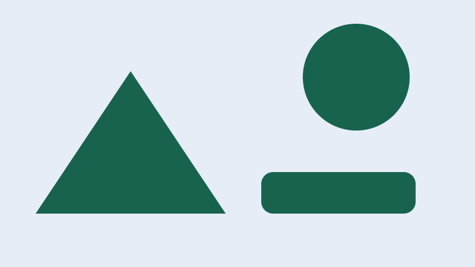

Pracownia ceramiki
Spotyka się w wtorki albo piąteczki dla pojebek
Wtorek, godzina 15:00, Pisz ul. Dobra 10
dla nowych
Kiedy? :
Spotyka się w wtorki albo piąteczki dla pojebek
Wtorek, godzina 15:00, Pisz ul. Dobra 10

Spotyka się w środy
Godzina 13:00, Pisz ul. Dobra 10